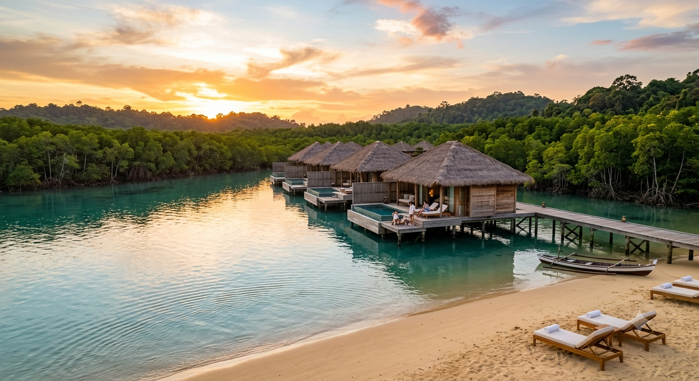

Destination Deep Dive
Batam Island
The Riau Islands' engine room — free-trade energy, championship golf, floating seafood kelongs, and the iconic Barelang Bridge at sunset.
The Riau Islands' engine room — free-trade energy, championship golf, floating seafood kelongs, and the iconic Barelang Bridge at sunset.

Rising from the heart of the straits between Singapore and Sumatra, Batam Island spans 415 square kilometers as a premier Free Trade Zone of Indonesia. Since economic restructuring in the late 1980s, Batam has transformed from an industrial manufacturing base into one of Southeast Asia's most compelling leisure destinations — all within a short fast-ferry ride from Singapore's HarbourFront Centre.
The island's character is defined by its duality: in the central corridor around Nagoya and Batam Center, modern shophouses, five-star hotels, department stores, and business towers create a cosmopolitan energy that mirrors downtown Singapore but at roughly 40 percent of the cost. Eastward toward Tanjung Priok and Toko, the landscape shifts to green hills, traditional Malay fishing villages, and newly developed industrial estates.
What makes Batam genuinely unique is the breadth of its entertainment ecosystem. Southeast Asia's largest cable wakeboarding at Batam Wakepark, six championship golf courses with floodlit evening ranges, a food culture that stretches from Japanese precision kelong (floating restaurant) seafood to Indonesian satay under banyan trees -- this island rewards repeated visits because you literally cannot exhaust it in one trip.
These are the experiences that turn first-time visitors into annual repeat travelers to Batam.
You've done the bridge, the wakeboarding, and the mall. Now discover what locals treasure.

Bintan's crystal lagoons and luxury resorts. Golf beyond anything in Singapore. Contact our team for personalized travel planning and island guidance. One ferry ride from Batam to each.